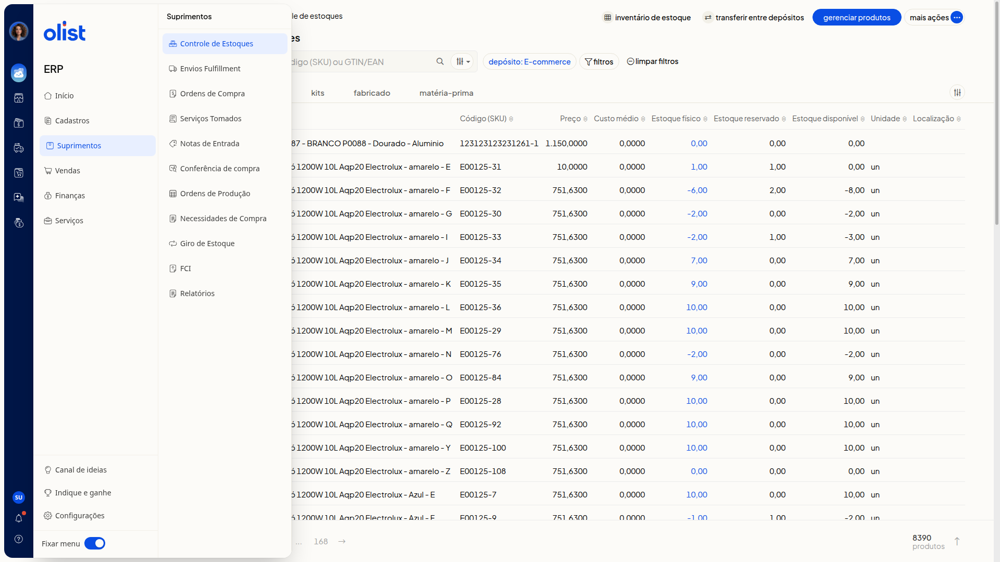

Controle de lotes e validades de produtos
Descrição
No ERP da Olist, você consulta as quantidades dos produtos no Controle de estoques. A lista não exibe lote nem validade.
Acesse Suprimentos > Controle de Estoques no menu lateral do ERP. Ao clicar na quantidade de Estoque físico, o painel Detalhes lista depósitos e quantidades, não lotes do produto.
Pré-requisitos
- Acesso ao ERP com o menu Suprimentos visível.
- Apenas quem tem permissão para o Controle de estoques acessa a tela.
- A aba Lotes e validades pode exigir um plano superior para ser desbloqueada.
- A aba Lotes e validades pode ser desbloqueada ao contratar a extensão.
Importante
- Depósito Lote e Entrada são nomes de depósito, não campos de lote ou de lançamento.
Instruções
-
Clique em Suprimentos no menu lateral do ERP.

-
Clique em Controle de Estoques. A tela Controle de estoques mostra a lista de produtos, a busca por nome, código (SKU) ou GTIN/EAN, o filtro depósito e as abas Todos, Simples, Kits, Fabricado e Matéria-prima.
-
Confira as colunas Produto, Código (SKU), Preço, Custo médio, Estoque físico, Estoque reservado, Estoque disponível, Unidade e Localização. Não há coluna de lote nem de validade.
-
Clique na quantidade de Estoque físico de um produto para abrir o painel Detalhes. O painel lista depósitos e quantidades, e não mostra lote nem validade do produto.
Resultado
Ao fechar o painel Detalhes, você volta à lista. A lista permanece sem colunas de lote ou validade.
Informações adicionais
Lotes e validades não aparecem nos menus da tela
O menu Suprimentos, o menu Mais ações e o menu da linha do produto não trazem uma opção nomeada de lotes ou validades.
Links relacionados
Se precisar de ajuda para desbloquear a aba Lotes e validades, fale com o suporte.